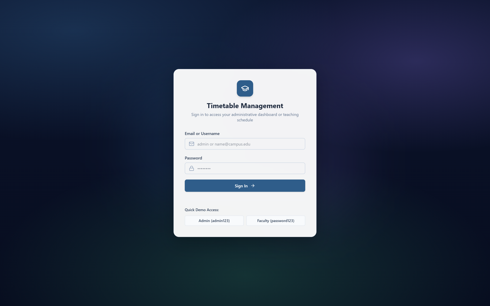
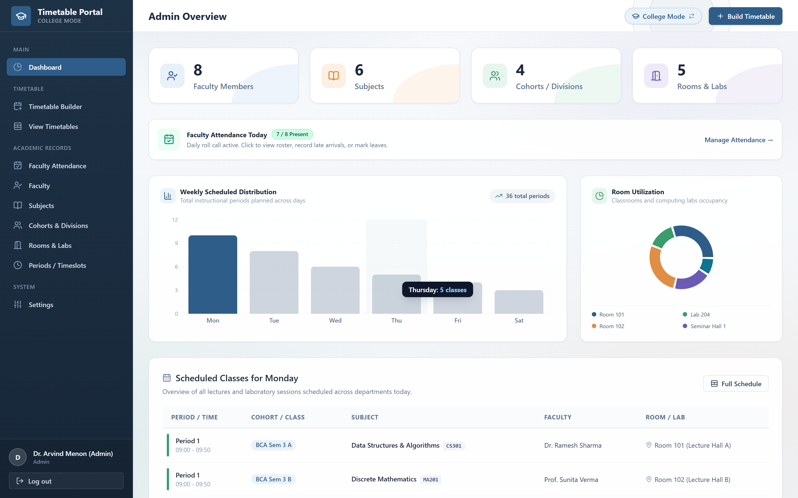
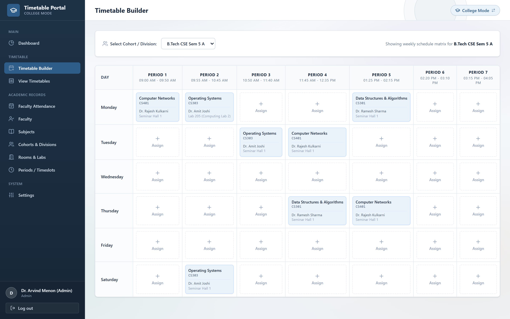
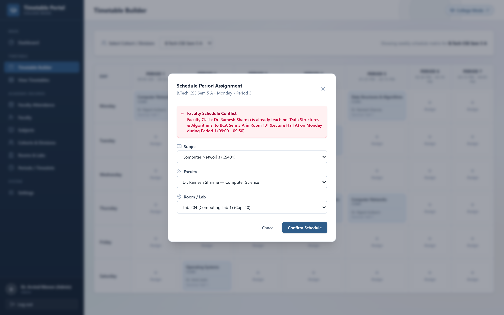
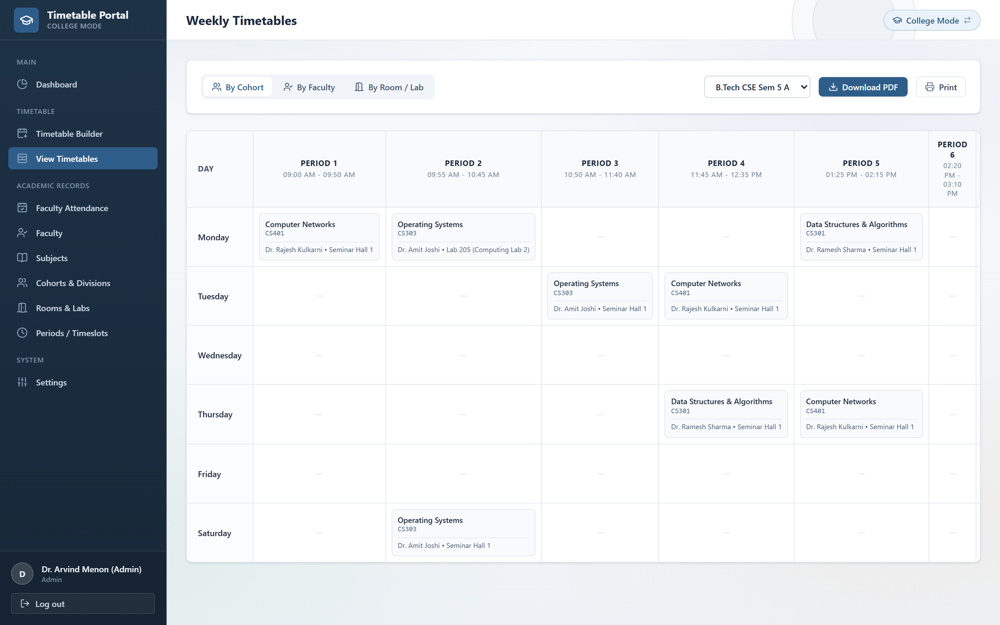
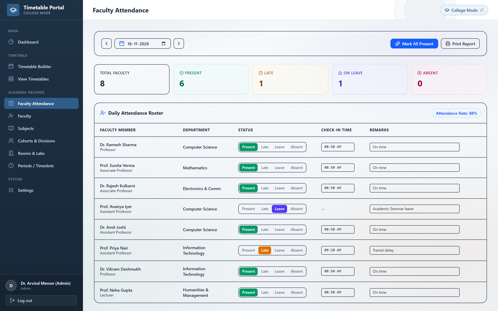
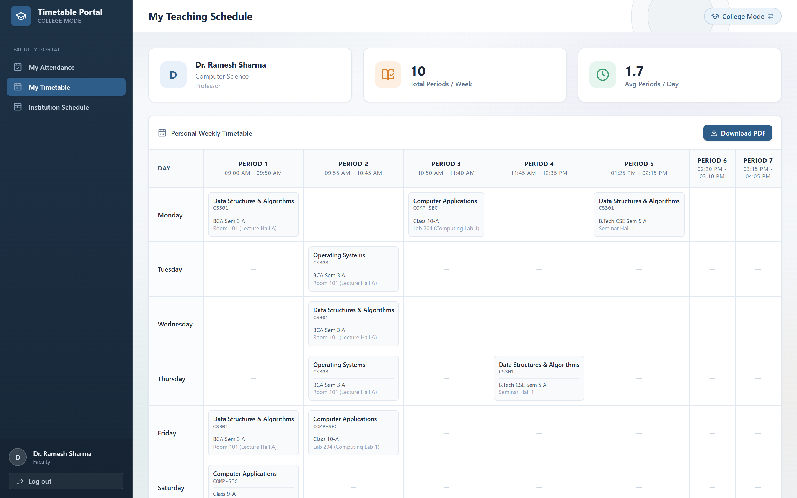
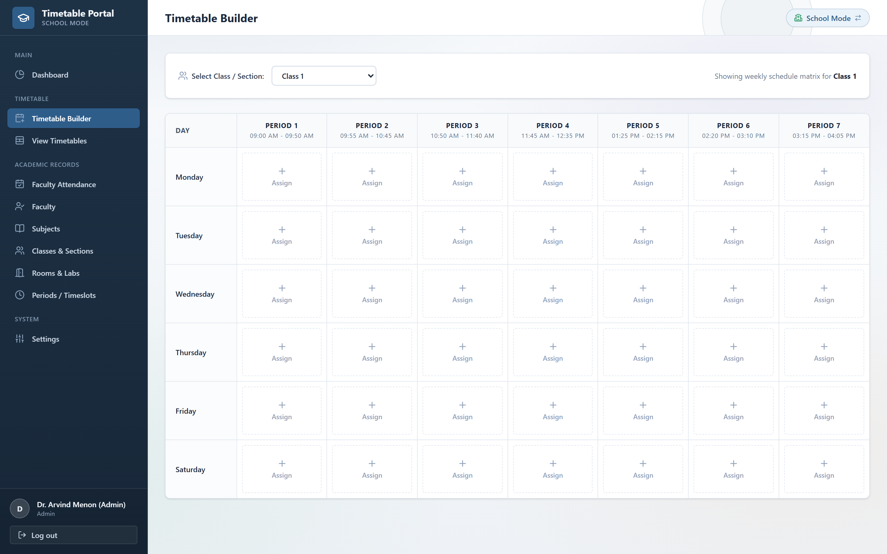

School of Information Technology
Submitted in partial fulfillment of the requirements for the degree of
Bachelor of Computer Applications (BCA)
Specialization in Artificial Intelligence & Data Science
| Submitted by: | Swapnil Sahu |
| PRN / Roll No: | ADYPU2024BCA042 |
| Project Guide: | Prof. Sachin Deshmukh |
Department of Computer Applications
Ajeenkya DY Patil University, Charholi Budruk, Pune, Maharashtra 412105
Semester IV — Academic Year 2026–2027
This is to certify that the mini project entitled "EduSchedule — Academic Faculty & Timetable Management System" is a bonafide work carried out by Swapnil Sahu (PRN: ADYPU2024BCA042), a student of Bachelor of Computer Applications (AI & Data Science), Semester IV, at the School of Information Technology, Ajeenkya DY Patil University, Pune.
This project report is submitted in partial fulfillment of the academic requirements prescribed by the university for the academic year 2026–2027. The project was implemented and verified under standard academic supervision, and the results presented in this report represent the student's authentic work.
|
Prof. Sachin Deshmukh
Project Guide |
Dr. R. K. Sharma
Head of Department |
External Examiner
Seal & Signature |
I express my sincere gratitude to my project guide, Prof. Sachin Deshmukh, for providing constant direction, constructive suggestions, and technical encouragement throughout the design and implementation of this timetable management system.
I also thank Dr. R. K. Sharma, Head of the Department, and the faculty members of the School of Information Technology for their support and for making laboratory and cloud computing resources accessible.
I extend my thanks to Ajeenkya DY Patil University for creating an academic curriculum that fosters practical problem solving and full-stack software development.
Lastly, I thank my peers and family whose feedback and encouragement helped me successfully complete this mini project within the given timeframe.
Swapnil Sahu
PRN: ADYPU2024BCA042
Academic institutions face significant administrative challenges when preparing weekly class timetables. Manual scheduling using spreadsheets frequently results in resource conflicts, such as booking the same faculty member for two simultaneous classes, assigning a classroom to multiple student cohorts, or creating overlapping periods. Furthermore, traditional systems fail to adapt when switching between college degree structures (departments, semesters, and divisions) and secondary school models (classes 1 through 12).
This project presents EduSchedule, a full-stack academic timetable and faculty management web application. The system provides automated three-tier conflict detection covering student groups, faculty, and physical classrooms before any schedule slot is stored in the database. Built with Next.js 16, TypeScript, Supabase PostgreSQL, and Tailwind CSS, the application offers role-based access for administrators and teaching faculty. The solution also integrates a daily faculty attendance roll-call module, chronological period ordering (Periods 1 to 7), a dynamic institution mode switcher, and instant client-side PDF timetable generation. The system eliminates manual scheduling clashes and delivers clear schedules across all departments.
| Sr. No. | Chapter / Section Title | Page No. |
|---|---|---|
| 1 | Cover Page | 1 |
| 2 | Certificate and Acknowledgement | 2 |
| 3 | Abstract and Table of Contents | 3 |
| 4 | Introduction, Problem Statement, Objectives and Scope | 4 |
| 5 | Technology Stack and Deployment Architecture | 5 |
| 6 | System Design and Relational Architecture | 6 |
| 7 | System Modules and Core Conflict Detection Logic | 7 |
| 8 | Application Screenshots — Part I (Admin Portal & Scheduler) | 8 |
| 9 | Application Screenshots — Part II (Faculty & Attendance) | 9 |
| 10 | Testing, Limitations, Future Scope, Conclusion and References | 10 |
Educational institutions operate on tightly structured bell schedules comprising lectures, laboratory practicals, and tutorial sessions. Coordinating hundreds of faculty members, student cohorts, and specialized laboratory rooms every week is a complex logistical task. In most institutions, schedule creation is conducted manually by academic coordinators using generic spreadsheets. Because spreadsheets lack relational constraints and proactive validation, schedule collisions routinely emerge. EduSchedule was engineered to solve this challenge by replacing error-prone manual spreadsheets with an interactive, web-based management platform featuring automated clash detection and centralized timetable views.
Manual timetable planning suffers from critical vulnerabilities that disrupt institutional operations:
The system is designed for deployment within schools, polytechnic institutes, and collegiate universities. The application scope covers role-based authentication (Admin and Faculty), interactive timetable matrices, daily faculty attendance rosters, personal faculty schedule views, and PDF reporting. Real-time notifications and biometric integration remain outside the initial project boundary and are designated for future milestones.
The system is constructed using modern web standards prioritizing execution speed, type safety, relational data integrity, and low maintenance overhead:
| Layer | Technology | Why It Was Used |
|---|---|---|
| Language | TypeScript 5 / ES2024 | Provides compile-time type safety across database entities, API contracts, and user interface state management. |
| Web Framework | Next.js 16 (App Router) | Offers unified full-stack architecture with React 19 Server Components for fast page loading and API Route Handlers. |
| User Interface | Tailwind CSS v4 | Utility-first CSS framework enabling a consistent campus theme (#2F5D8A), responsive layout, and print stylesheets. |
| Database | PostgreSQL on Supabase | Relational database offering ACID compliance, foreign key cascade constraints, and instant PostgREST connectivity. |
| Authentication | JWT (jose) + bcryptjs | Stateless session cookies using signed JSON Web Tokens and salted cryptographic hashing for faculty and admin credentials. |
| Document Export | jsPDF & jspdf-autotable | Enables vector PDF generation directly in the client browser without overloading serverless compute limits. |
| Iconography | Lucide React | Clean, lightweight SVG icon system for unambiguous navigation, schedule cards, and operational status badges. |
| Testing / Automation | Playwright Test | Automates end-to-end browser workflows, verifying form submissions, clash modal alerts, and capturing screenshots. |
EduSchedule is deployed as a cloud-native serverless web application. The application code is hosted on GitHub (https://github.com/Epilougee/sarvesh.git) and integrated with the Vercel cloud edge network via automated CI/CD pipelines. Every push to the main branch triggers automated linting, TypeScript compilation, bundle optimization, and edge deployment to the production URL: https://tmtb-management.vercel.app.
Database operations are hosted on a managed cloud PostgreSQL instance on Supabase. Network communication between the Next.js edge route handlers and the database is secured using SSL/TLS encryption. Sensitive parameters, including the service role key and session tokens, are stored securely inside environment configuration variables.
The relational database satisfies Third Normal Form (3NF) requirements. All table relations maintain referential integrity through foreign keys configured with cascading deletions:
| Table Name | Primary Fields | Relational Dependencies / Purpose |
|---|---|---|
users |
id (PK), name, email, password_hash, role |
Core authentication table for administrators and faculty. |
faculty |
id (PK), user_id (FK), department, designation, phone |
Links to users.id via 1-to-1 foreign key relationship. |
groups |
id (PK), name |
Unified table storing cohorts (e.g. BCA Sem 3 A or Class 10-A). |
subjects |
id (PK), name, code |
Stores academic courses and subject codes (e.g. CS301). |
rooms |
id (PK), name, capacity |
Classrooms, computing labs, and institutional seminar halls. |
timeslots |
id (PK), label, start_time, end_time |
Chronological bell schedule periods (e.g. Period 1: 09:00 - 09:50). |
timetable |
id (PK), group_id, subject_id, faculty_id, room_id, day, timeslot_id |
Central schedule matrix linking group, subject, faculty, room, and period. |
settings |
key (PK), value |
Configures active institutional mode (college or school). |
The core logic of EduSchedule resides in detectClash(). When an allocation request is submitted, the system queries the database across three independent dimensions for the target (day, timeslot_id):
Monday, Period 1 (09:00 AM – 09:50 AM) [timeslot_id = 1].Dr. Ramesh Sharma (faculty_id = 9) is scheduled teaching CS301 to BCA Sem 3 A in Room 101.Dr. Ramesh Sharma to teach B.Tech CSE Sem 5 A in Seminar Hall 1 on Monday during Period 1.
// Step 2 of 3: Faculty Conflict Check in src/lib/clashDetection.ts
let facultyQuery = supabase.from("timetable")
.select(`id, groups:group_id(name), subjects:subject_id(name), rooms:room_id(name), faculty:faculty_id(users:user_id(name))`)
.eq("faculty_id", facultyId).eq("day", day).eq("timeslot_id", timeslotId);
if (excludeId) facultyQuery = facultyQuery.neq("id", excludeId);
const { data: facultyConflicts } = await facultyQuery;
if (facultyConflicts && facultyConflicts.length > 0) {
const c = facultyConflicts[0] as any;
return {
hasClash: true,
message: `Faculty Clash: ${c.faculty?.users?.name} is already teaching '${c.subjects?.name}' to ${c.groups?.name} in ${c.rooms?.name} on ${day} during ${periodInfo}.`
};
}








| Test ID | Action / Input | Expected Result | Actual Result |
|---|---|---|---|
| TC-01 | Login with admin / admin123 |
System redirects to /dashboard with admin navigation. |
PASS |
| TC-02 | Login with ramesh.sharma@campus.edu |
System redirects to personal portal /my-timetable. |
PASS |
| TC-03 | Attempt login with invalid password | Display "Invalid credentials" error banner; block entry. | PASS |
| TC-04 | Schedule Dr. Ramesh on Monday Period 1 in Grp 3 | Detect faculty clash; display error alert; block DB insert. | PASS |
| TC-05 | Switch institution type to "School" in settings | Update cohort lists to Class 1–12 and school subjects. | PASS |
| TC-06 | Click "Mark All Present" on Attendance page | Update all faculty statuses to "present" with current time. | PASS |
| TC-07 | Click "Download PDF" on Timetable View | Generate formatted vector PDF file on client browser. | PASS |
Current Limitations:
Future Scope:
The EduSchedule project provides an effective solution to academic scheduling challenges. By enforcing automated three-tier clash detection across cohorts, faculty, and classrooms, the system eliminates human error from timetable creation. The integration of role-based portals, faculty attendance tracking, school and college mode flexibility, and PDF export functionality delivers an end-to-end operational platform for educational institutions.